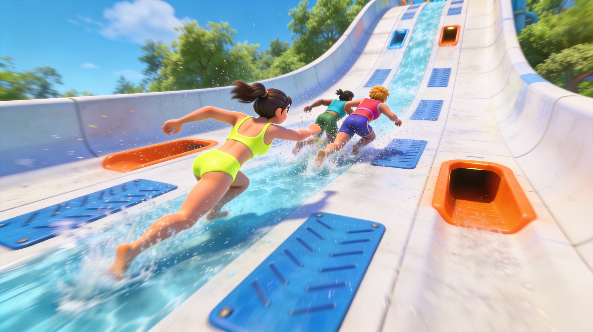
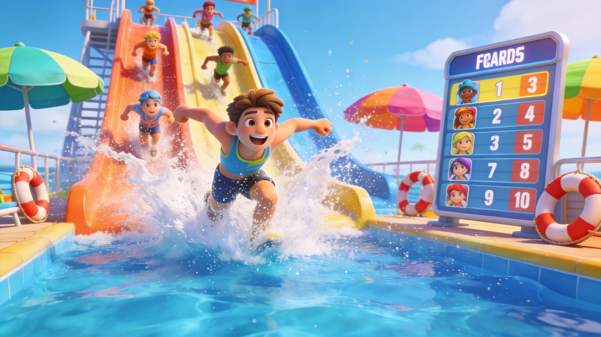
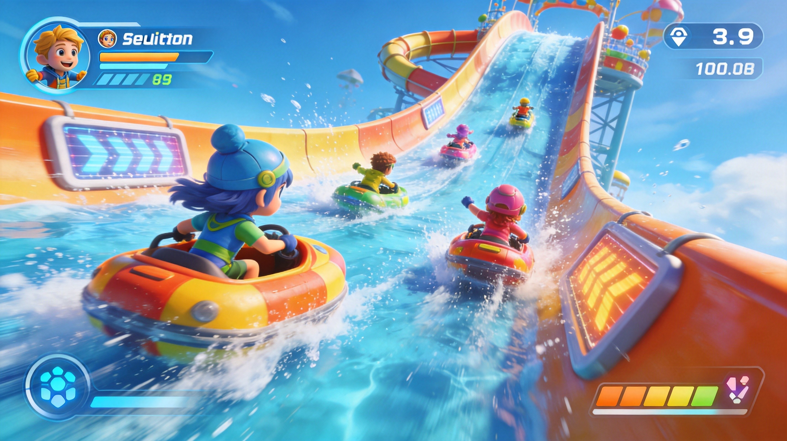

Introduction
AquaPark.io is a fast-paced multiplayer .io game where you race down massive, twisting water slides against other players. The goal is simple: reach the finish pool before everyone else. But between dizzying curves, aggressive opponents, and risky shortcuts, winning takes more than just sliding straight down. Each track is packed with sharp turns, speed boosts, water geysers, and opportunities to launch yourself off the slide to skip entire sections. Whether you prefer a safe, steady approach or a high-risk, high-reward shortcut strategy, AquaPark.io has something for every type of player.
Getting Started

Getting started on AquaPark.io is simple. Open https://aquapark.io in any modern browser and you'll immediately join a race. Use your mouse or touch screen to swipe left and right, steering your character along the water slide. On curves, aim for the inside line — it's the shortest distance, just like real racing. If you get bumped off the slide, don't panic — you'll respawn on the track quickly. Just try to aim for the slide below when you're airborne. Each race rewards coins based on your finishing position, which you can spend on unlocking fun character skins ranging from animals to legendary designs. Win multiple rounds to earn cups: Temple Cup, City Cup, Zen Cup, and more. The further you progress, the more intense the tracks become — with sharper turns, more obstacles, and bigger shortcut opportunities.
Basic Tips
Basic Tips for New Players 1. Take the inside line on curves: When you're not attempting a shortcut, always steer toward the inside of curves. The distance saved per turn might seem small, but it adds up over an entire race. 2. Bump opponents off the slide: Aggression pays off. Bumping into other players — especially near the outer edge of a curve — can knock them off entirely. Stay near the center yourself to avoid being bumped. 3. Play smart in the early game: The start of each race is chaotic with everyone bunched together. Don't fight for the lead immediately — let the chaos thin out, then make your move in the middle section using shortcuts. 4. Watch for speed boost panels: Yellow arrow panels on the track give you a burst of speed. These are especially useful right before attempting a shortcut jump.
Advanced Strategies

The Shortcut Jump — AquaPark.io's Most Important Technique The single most powerful move in AquaPark.io is the shortcut jump. By intentionally launching yourself off the side of the slide at the right moment, you can skip huge sections of the track and land further down — sometimes going from last place to first in a single jump. How to execute it: Build up speed on steep sections, then steer sharply toward the outer edge at a curve. Your character will fly off the slide. While airborne, you have limited control — try to aim for the slide below rather than the water. Landing in the water means you respawn back on the track, but you lose valuable time. Risk vs. Reward: A successful shortcut can completely change your race position. A failed one can cost you the race. The key is learning which curves offer the best launch points — this comes with experience. Power-Up Strategies: AquaPark.io features several power-ups that add chaos to the race. The Giant Transformation lets you smash through opponents effortlessly. The Cloud/Umbrella Glide lets you float over entire sections of the track. Speed Boost Panels are best used right before a shortcut attempt for maximum air distance. Water Geysers can launch you off track — but skilled players can use them as improvised shortcuts by hitting them at the right angle.
Pro Tips

Pro Tips for Dominating Every Race 1. Learn the maps: Each cup has different slide layouts. The more you play, the better you'll know which curves have shortcut opportunities. Practice on easier cups before attempting risky jumps on harder tracks. 2. Chain shortcuts: On longer tracks, it's possible to chain multiple shortcut jumps in a single race. Each successful jump puts you further ahead, but one mistake can undo all your progress. 3. The Geyser Launch: Instead of avoiding water geysers, intentionally hit them at an angle to launch yourself toward the finish pool. This is a high-risk, high-reward move that can win you the race in the final stretch. 4. The Draft: Following closely behind another player can sometimes shield you from bumps and give you a slingshot effect when they hit a speed boost. Use this to conserve energy for a late-race shortcut. 5. Use ads wisely: After each race, watching an ad doubles your coin reward. This adds up fast and helps you unlock better skins sooner. 6. Don't panic if you fall: You respawn on the track quickly. Focus on aiming for the slide when airborne — panic steering usually makes things worse.
🎮 Controls & Mechanics Deep Dive
Unlike traditional platformers where you just tap left or right, Aquapark.io uses a highly unique drag-to-steer mechanic that completely changes how you interact with the track. On mobile, you literally grab your character and pull them in the direction you want to go. On desktop, it’s all about clicking and dragging your mouse. This means your turning radius is entirely dependent on how far you pull your cursor or finger from your character’s center point. Pull too hard, and you’ll violently yank yourself right off the edge of the slide. Mastering the sensitivity of this pull is the single most important skill in the game.
The physics engine relies heavily on momentum, gravity, and friction. You aren't just sliding; you're accelerating down a steep, unpredictable incline. When you clip the side walls, you don't just bounce off—you lose a significant chunk of your forward velocity, which can ruin your timing for upcoming jumps. The hitbox for your character is a surprisingly tight cylinder. This is great news when you need to thread the needle through tight gaps or narrow bridges, but it also means a microscopic misalignment on a curved edge will send you plummeting into the water below. Furthermore, the water geysers don't just push you up; they alter your horizontal trajectory based on exactly where you hit the water column. Hitting the center gives you a straight vertical boost, while clipping the edge will launch you sideways, often into an opponent or off the map entirely.
🎯 Game Modes Breakdown
While the core sliding mechanic remains the same, the different game modes in Aquapark.io completely shift the strategic landscape. Here is a breakdown of what you'll face when you queue up.
- Classic Race (FFA): This is the bread and butter of the game. You’re dropped into a lobby with up to 10 other players in a pure Free-For-All race to the bottom. The objective is simple: cross the finish line first. Because everyone is out for themselves, this mode is pure chaos. You’ll need to balance aggressive blocking with taking safe, efficient lines. It’s the best mode for practicing your raw speed and shortcut execution.
- Team Clash: In this mode, the lobby is split into two distinct colored teams. The goal isn't just to win; it's to ensure your team wins. This completely changes the pacing. Instead of just racing, you'll find yourself actively playing defense, swimming back up the slide (if the mechanics allow in specific updates) or positioning yourself at choke points to block the opposing team's fastest runners. Communication and sacrificing your own placement to block an opponent are key here.
- Endless / Arcade Mode: There is no finish line in this mode. The slide just keeps generating, getting narrower, twistier, and more chaotic the further you go. The objective is purely survival and score-chasing. This mode is absolutely essential for practicing your air control and reaction times without the pressure of a ticking clock or aggressive opponents bumping you off the edge.
- Battle Royale / Survival: A thrilling twist where the track actively tries to kill you. Sections of the slide will crumble, fall away, or become covered in obstacles as the race progresses. The player count dwindles as people fall off, and the last slider remaining takes the crown. Positioning is everything here; stay in the middle of the pack early on, but be ready to sprint when the track starts collapsing behind you.
🚀 Advanced Strategies & Pro Tips
If you want to stop finishing in the middle of the pack and start dominating the leaderboards, you need to move beyond just holding the center of the slide. Here are some advanced techniques that separate the casuals from the pros.
Master Mid-Air Steering: When you launch off a massive ramp, you aren't just a helpless ragdoll. You can still slightly adjust your trajectory while in the air. If you see a tight corner coming up after a big jump, start pulling your steering input toward the inside of the curve before you even land. This "air braking" and turning allows you to land perfectly on the apex of the corner, maintaining maximum speed without scraping the walls.
The "Late Brake" Cornering: Beginners tend to start turning as soon as they see a curve. Pros wait until the absolute last fraction of a second. By hugging the outside edge of the slide right up until the turn, you maintain a straight line (and thus, maximum velocity) for as long as possible. You then execute a sharp, aggressive pull to the inside. It looks like you're going to crash, but the tight turning radius of the drag mechanic lets you snap into the perfect racing line.
Use Opponents as Human Shields: Don't just view other players as obstacles; view them as tools. If you're approaching a section with a known blind jump or a tricky narrow bridge, draft directly behind an opponent. If they mess up and fall off, you have a split second to react and correct your line. Conversely, if you're in the lead, intentionally swerve slightly to block the slipstream of the player behind you, forcing them to take a wider, slower line.
Psychological Fake-Outs: This is purely for messing with the player behind you. If you know a risky shortcut is coming up, drift toward the edge as if you're going to take the jump. Watch the player behind you commit to the same risky path to keep up with you, then at the very last second, pull back to the safe main track. They’ll fly off into the abyss while you cruise down the safe route.
❓ Frequently Asked Questions
Is Aquapark.io completely free to play?
Yes, the game is 100% free to play directly in your browser or via the mobile app. It is supported by optional video ads. You can watch ads to double your end-of-race coins or to unlock specific premium skins, but you never have to spend real money to enjoy the core gameplay or progress through the ranks.
How do I unlock new character skins and slides?
Unlocking cosmetics is tied to the in-game coin economy. You earn coins by finishing races, with higher placements yielding bigger payouts. You can also earn coins by watching rewarded ads. Once you have enough coins, head to the shop menu before queuing up to buy new character models, custom slide colors, and trail effects. Some rare skins are also tied to specific win milestones or seasonal events.
Is it better to play on mobile or PC?
It really comes down to personal preference, but PC generally offers a slight competitive edge. Using a mouse allows for much more precise micro-adjustments in your steering compared to a thumb on a glass screen. However, the mobile app is incredibly well-optimized, and the touch controls are highly responsive. If you're playing on mobile, make sure to clean your screen and perhaps use a matte screen protector to prevent your finger from sticking during intense drag maneuvers.
Why do I keep falling off at the exact same spot on every run?
This usually happens because of the game's momentum physics. If you're coming into a curve too fast, the game's physics engine will carry your character's mass straight off the edge, regardless of how hard you pull the steering input. You have to start decelerating and turning *before* the curve hits. Alternatively, you might be misjudging the hitbox on a narrow bridge; remember that your character's hitbox is a cylinder, so even if your visual model looks like it's on the track, your invisible collision box might be clipping the edge.
Can I play private matches with my friends?
Currently, Aquapark.io relies heavily on automated, region-based matchmaking to keep queue times near zero. While some updated versions and specific clones of the game have introduced private room codes, the core browser version mostly throws you into random lobbies. The best way to play with friends is to coordinate a time to jump into the game simultaneously and hope the matchmaking algorithm groups you together in the same lobby.
Conclusion
AquaPark.io is all about mastering the balance between safe racing and risky shortcuts. Start by learning the inside line on curves and bumping opponents, then graduate to the shortcut jump — the single move that will win you the most races. With practice, you'll learn which curves offer the best launch points, when to use power-ups, and how to chain multiple shortcuts together. Grab your swimsuit and hit the slides — the finish pool awaits! 🌊